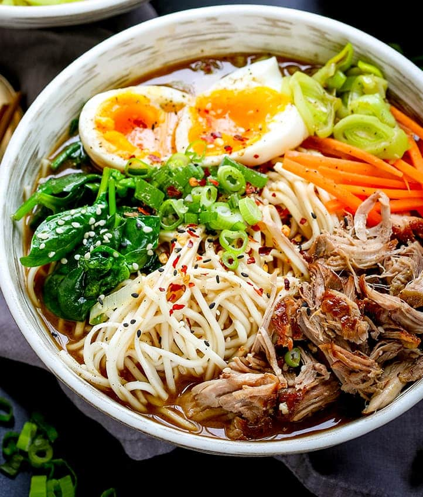

Pork Ramen Noodles

Pork Ramen Noodles Recipe
Ramen may seem like one of those dishes you can't recreate at home, but this recipe for cheat’s spicy pork ramen changes that.
Rather than spending hours making stock, we buy a good flavoured one and spike it with Asian aromatics
Ingredients
- Pork belly 500g
- 100ml soy sauce
- Ramen noodles 270g
- Hard boiled eggs
- Beansprouts
- Spinach and spring onions finely sliced
- 100ml mirin
Spicy Broth
- 1/2 chopped Spring onions
- 6 slices Ginger
- 1 red chilli
- 1 clove halved garlic
- 1.5 litres chicken stock
- hint of sesame oil
Cooking Instructions
- Heat the oven to 160C/fan 140C/gas 3. To make the pork belly, put the pork in a small baking dish it will fit snugly.
Mix the soy, mirin and 200ml water, and pour this over the pork belly.Add a little more water, if needed, to just cover the meat.
Cover tightly with foil and bake for 3 hours. Pour away the cooking liquid.
Cool the pork for 30 minutes, then wrap it in clingfilm and weight down with a heavy chopping board. Chill overnight, or for at least 6 hours to set the shape.
- To make the broth, put the spring onions, ginger, chilli and garlic on a chopping board and bruise them all with a rolling pin. Put it into a pan, add the chicken stock and simmer gently for 15 minutes.
Strain out all the solids and discard them.
- Slice the pork into neat slices and reheat it in the broth, adding a splash of soy and sesame oil for flavour.
- Cook the ramen following the packet instructions, and drain and divide the noodles between 4 warmed bowls.
Add a handful of spinach to each bowl, then pour over the simmering broth. Top with a few slices of pork, egg halves, beansprouts and spring onion.